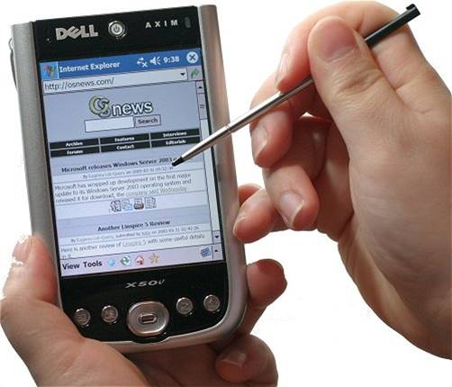
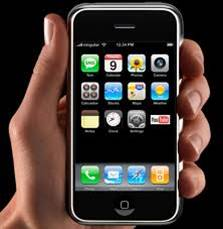

Mobile computing is a generic term describing one's ability to use technology while moving,as
opposed to portable which are only practical for use while deployed in a staitonary configuration.
A mobile computing device is created using mobile component,such as mobile hardware and software.
Mobile computing devices are portable devices capable of operating,executing,providing services
and applications like a computing device.It is a computing device used transit.User can access
data and information from wherever they are.Many types of mobile computers have been introduced
since the 1990's, including wearable computers,PDA,enterprise digital assistant,smartphone,UMPC(Ultra mobile pc)
,tablet pc.
Features of mobile computing are:
- Mobile computing also reduces the transaction cost from one account to another because of portability and easy communication access.
- It is a portable device that can be used during mobility
- It has limited processing and storage capability
- It is very useful tool for social interactivity that allows for data sharing and collaboration between users.
- Its connectivity ability helps for communication of data in any environment.
- We can sell a product or give service in quicker time by using mobile technology.